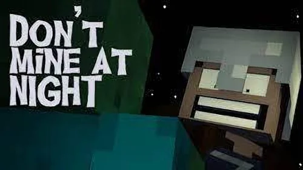
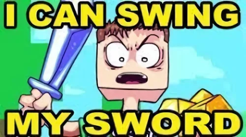
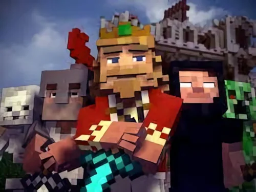
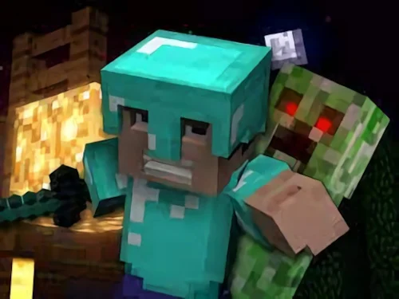
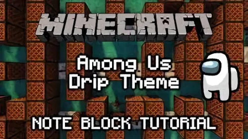
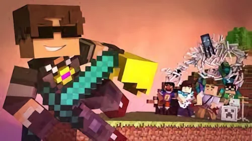
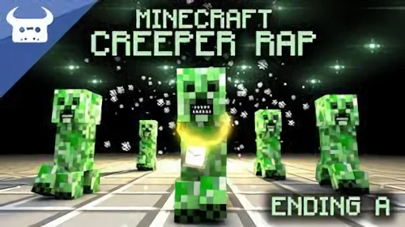
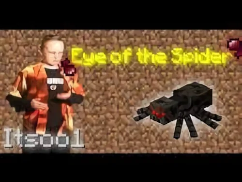
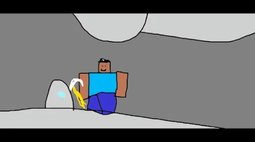

Top 10 Songs of the 2010s
Article Published 02/02/2022 12:55 PM EST
The 2010s had some pretty great music, but what were the best songs of the decade?
10. Don't Mine at Night
Don't mine at night is is a classic song, however many believe it was way ahead of its time. WIth meaningful lyrics and quality visuals, this song is a must-listen.
9. I Can Swing My Sword
This song not only has one of the deepest messages of any song in existence, but, along with its brother song, nugget in a biscuit, it has quality 2d animation to accompany the message of hard work going into all Minecraft tools.
8. Fallen Kingdom
This song sends a powerful message of a kind king losing his kingdom to monsters, with an amazing sound to boot. Like dis if u cry evry time.
7. Revenge
Creeper? Aww man. This song is known by all who frequent the highly intellectual site, Reddit. This song manages to combine upbeat lyrics with quality animation that leaves the viewer coming back time and again.
6. Among Drip (Noteblock Cover)
Stop posting about Among Us! I'm tired of seeing it! My friends on TikTok send me memes, on Discord it's fucking memes. I was in, a server, right, and aaaalllll of the channels were just Among Us stuff. I showed my champion underwear to my girlfriend and I flipped it and I said "hey babe, when the underwear's sus"! Hahaha dingding-dingding-ding-ding-ding-dingdingding. I fucking looked at a trashcan and I said "that's a bit sussy"! I looked at my penis, thought of the astronaut's helmet and I said "penis, more like pen-sus"! AAAAAAAAAA!!!
5. New World
Sky makes yet another epic song, this time donning his classic "budder" helmet in order to slay mobs and squids alike. Combined with the awe-inspiring music, this video is a must-listen for fans of classic Minecraft songs.
4. Creeper Rap
With fire bars and even hotter animation, this song will worm its way into anyone's head on first listen. Give this one a shot, even if you don't like rap.
3. Eye of the Spider
This song combines brilliant editting with a masterful vocal performance, creating an epic tale of a man killing as many spiders as possible. Give this one a listen ASAP.
2. Mine Diamonds
This masterclass of a symphony can move entire audiences to tears in an instant. Not only does the art of the album contain multitudes of deep imagery, not only is the instrumentation potentially the best in the world, but the vocalist is clearly a trained master of the art of singing. This is especially evident in the chorus, where he holds seemingly impossibe notes for the perfect amount of time. If you haven't listened to this one before, listen immediately or you will regret it.